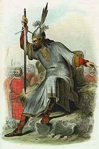

The Norse and Norse–Gael settlers probably did not come directly from
Scandinavia, but rather from Norse communities surrounding the Irish Sea,
Northern Isles and Outer Hebrides of Scotland, including the Shetland and
Orkney islands. A traditional name for the islands in Irish, Na Scigirí,
possibly refers to the (Eyja-)Skeggjar "(Island-)Beards", a nickname given
to island dwellers.
As part of Mercantilism, Denmark maintained a monopoly over trade with
the Faroe Islands and forbade their inhabitants trading with others (e.g.
the geographically close Britain). The trade monopoly in the Faroe Islands
was abolished in 1856, after which the area developed as a modern fishing
nation with its own fishing fleet. The national awakening from 1888 initially
arose from a struggle to maintain the Faroese language and was thus culturally
oriented, but after 1906 it became more political with the foundation of
political parties of the Faroe Islands.
In the first year of World War II, on 12 April 1940, British troops occupied
the Faroe Islands, shortly after the Operation Weserübung with the Nazi German
invasion of Denmark on 9 April 1940. In 1942–1943 the British Royal Engineers,
under the leadership of Lt. Col. William Law MC, built the only airport in the
Faroe Islands, Vágar Airport. Control of the islands reverted to Denmark
following the war, but Danish rule had been undermined, and Iceland's independence
served as a precedent for many Faroese.
The 1946 Faroese independence referendum resulted in 50.73% in favor of
independence to 49.27% against.The Faroe Islands subsequently declared
independence on 18 September 1946; however, this declaration was annulled by
Denmark on 20 September on the grounds that a majority of the Faroese voters
had not supported independence and King Christian X of Denmark dissolved the
Faroese Løgting on 24 September. The dissolution of the Løgting was
on 8 November followed by the Faroese parliamentary election of 1946 in which
the parties in favour of full independence received a total of 5,396 votes
while the parties against received a total of 7,488 votes.
As a reaction to the growing self-government and
independence movements, Denmark finally granted the Faroe Islands home-rule
with a high degree of local autonomyon 30 March 1948.
In 1973 the Faroe Islands declined to join Denmark in entering the European
Economic Community (later absorbed into the European Union). The islands
experienced considerable economic difficulties following the collapse of the
fishing industry in the early 1990s, but have since made efforts to diversify
the economy. Since then, support for independence has grown and is the objective
of the Republican Party.